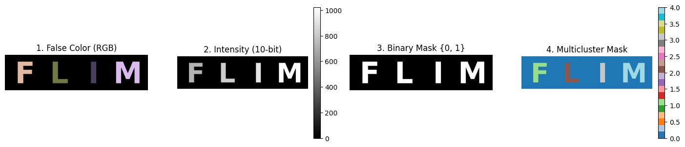
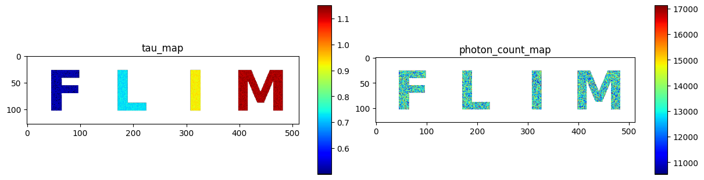
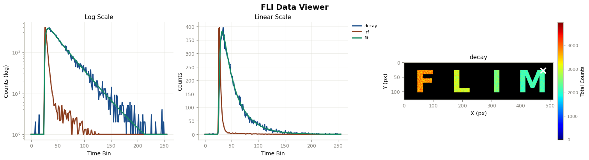
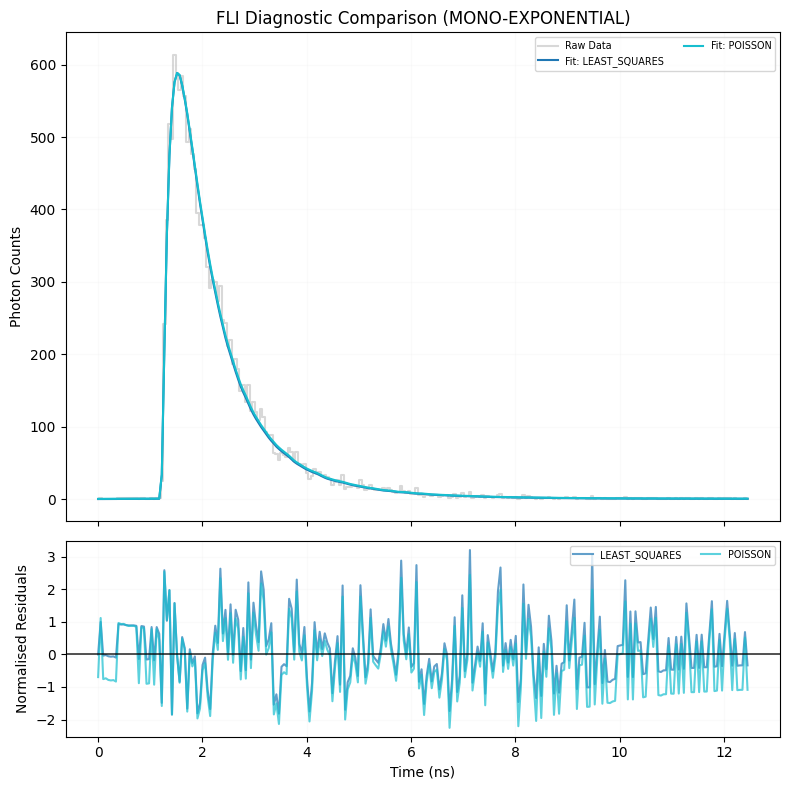
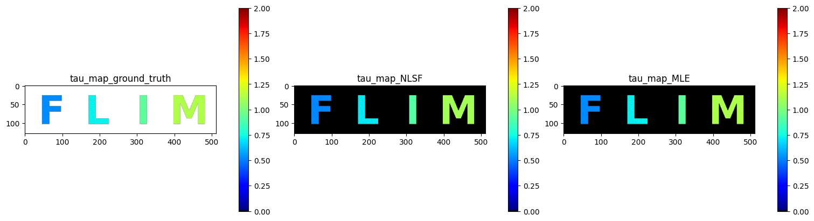
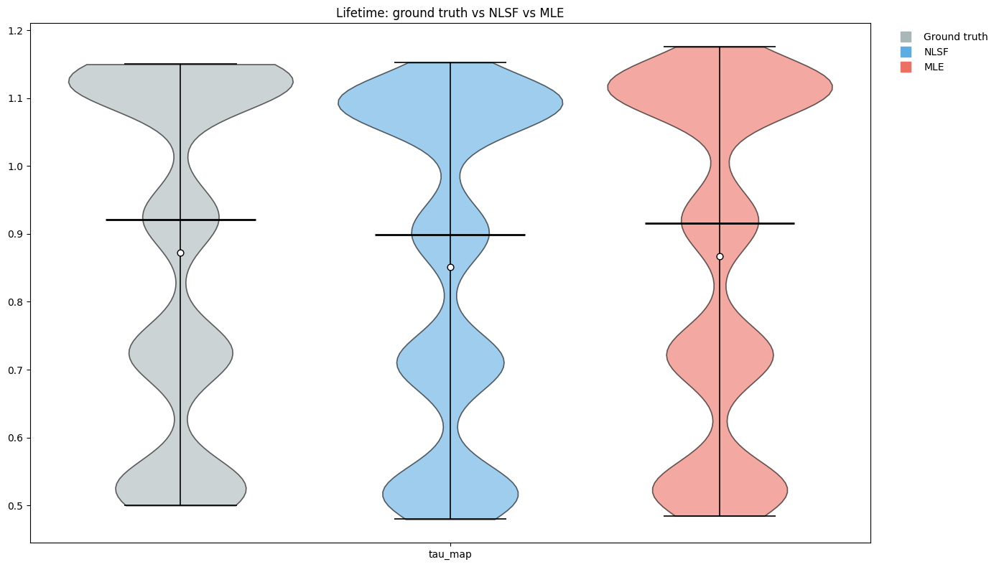
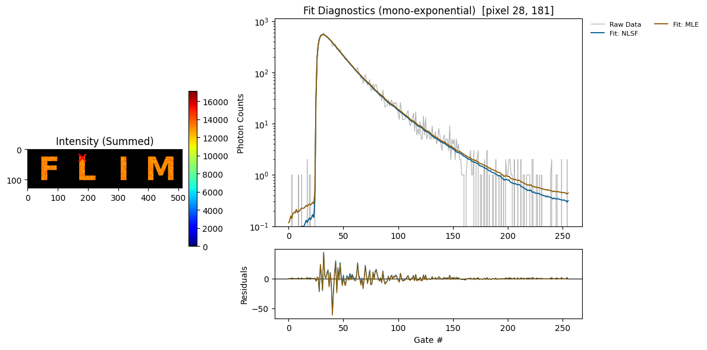
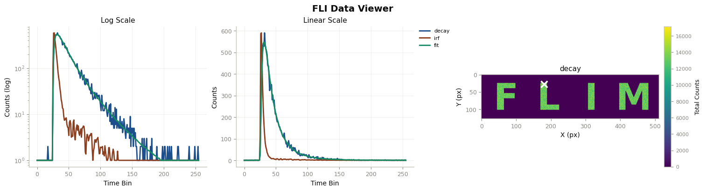

1. Fitting Example (NLSF & MLE) - Mono-exponential FLI data processing#
This example fits a simulated, mono-exponential fluorescence lifetime image (FLI) pixel by pixel with two estimators and compares them against the known ground truth:
Non-linear least squares (NLSF): minimizes the sum of squared residuals between the IRF-convolved model and the decay. It is fast and works well when photon counts are high, since the noise is then close to Gaussian.
Maximum likelihood estimation (MLE): maximizes the Poisson log-likelihood of the photon counts. It models the counting statistics directly, so it remains accurate at low photon counts, where least squares becomes biased.
This example walks through:
Simulating a whole FLI image with known lifetimes (as in the “Whole Image Simulation” example)
Comparing NLSF and MLE on a single pixel
Fitting the whole image with NLSF and with MLE
Comparing the fitted lifetime maps and their distributions with the ground truth
Inspecting the fit and residuals at individual pixels
Author - Vikas
import sys
import numpy as np
sys.path.insert(0, "ex_helper") # local helper for synthetic image generation
from sim_general_image import LettersShape, ROIMaskGenerator
from pyfli.analysis.utils import plot_pixel_diagnostic, random_true_pixel
from pyfli.analyticalWorkflow import AnalyticalHelpers
from pyfli.data_cc import Normalization
from pyfli.data_text import MessageDisplay
from pyfli.data_vnp import ColorProcessor, DataViewer, Plotter
from pyfli.io import DataOperations
from pyfli.simulator import FLIModelImageGenerator
from pyfli.solver import (
BaseFLIFitter,
BinnedFLIFitter,
FittingComparator,
FLICPUProcessor,
MLEFLIFitter,
)
1.1. Generating a test image#
A test image is simulated to compare the ground truth against the estimated values. In this example, a 128 x 512 image is generated with the letters “F”, “L”, “I”, “M”. Each letter is assigned a different intensity value (grayscale bit size) and a different lifetime: 0.7 ± 0.05 ns, 0.8 ± 0.05 ns, 0.9 ± 0.05 ns, and 1.0 ± 0.05 ns, respectively.
h, w = 128, 512
generator = ROIMaskGenerator((h, w), top=10, bottom=10, left=10, right=10)
FLIM_letters = LettersShape(letters=("F", "L", "I", "M"), gap=0.15)
custom_intensities = [0.7, 0.8, 0.9, 1.0]
# Preview the generated image
_ = generator.plot_preview(
FLIM_letters,
bit_depth=10,
intensities=custom_intensities,
show=True,
)

1.2. Loading the IRF#
The instrument response function (IRF) is convolved with the decay model during both simulation and fitting. Its number of time gates also sets the gate width and the laser/acquisition frequencies used by the fitters.
# Path to the local IRF file
IRF_PATH = "<select file/folder path>"
loader = DataOperations(irf_path=IRF_PATH)
irf_data = loader.load_irf()
gate_delay = 12.5 / irf_data.shape[2]
num_gates = irf_data.shape[2]
freq = AnalyticalHelpers(
laser_period=12.5, gate_delay=gate_delay, num_gate=num_gates
).freq_computation()
INFO:pyfli:Initiating IRF load from: <select file/folder path>
1.3. Simulation configuration#
MODEL_TYPE selects the decay model for both the simulation and the fits. Setting mono_fraction to 1.0 forces every simulated pixel to be mono-exponential.
MODEL_TYPE = "mono-exponential"
# Your constant, default configuration
BASE_CONFIG = {
# Modular Noise
"jitter": False, # offset artifact (due to jitter)
"dcr_on": True, # Dark Count Rate (thermal background)
"poisson": False, # Shot noise — Large detector only
"qe_on": True, # Quantum efficiency scaling
"read_noise_on": False, # Gaussian read noise — Large detector only
# Sensor
"sensor_type": "discrete", # "continuous" | "discrete"
"bit": 12,
"dcr": 0.08, # Mean dark counts per bin
"laser_feq": freq[1], # Laser repetition rate (MHz) → period = 12.5 ns
"round_on": True, # Round photon counts to integers — Macro_sim only
"clip_on": True, # Clip at bit-depth ceiling — Macro_sim: max_adc_val; TCSPC: max_bin_count
# Fluorescence Physics (FLI / FRET)
"tau2": (1, 1), # τ₂ ~ TruncNormal(mu=1 ns, sigma=0.5 ns)
"tau2_dist": "beta", # if dist "beta" or "normal" (default)
"efficiency": (1, 1), # FRET efficiency E ~ Beta(2, 5) → [0.1, 1.0]
"A1_fraction": (1, 1), # Amplitude fraction A₁ ~ Beta(2, 5) → [0.05, 0.95]
"photo_count": (2, 5), # Peak intensity ~ Beta(2, 5) × max_adc - large detectors
"mono_fraction": 1.0, # Fraction of pixels forced mono-exponential (0.0 = all bi-exp)
"n_cycles": (1_500_000, 2_000_000), # Accumulation cycles — for photon counter
}
Different ROIs (letter areas, in this case) are assigned different lifetimes.
def get_config(**kwargs):
"""Create a config by overriding defaults with specific test parameters."""
config = BASE_CONFIG.copy()
config.update(kwargs)
return config
ROI0 = {}
ROI1 = get_config(
tau2_beta_range=(0.05, 0.5),
)
ROI2 = get_config(
tau2_beta_range=(0.05, 0.7),
)
ROI3 = get_config(
tau2_beta_range=(0.05, 0.9),
)
ROI4 = get_config(
tau2_beta_range=(0.05, 1.1),
)
img_intensity = generator.generate_intensity_image(
FLIM_letters, intensities=custom_intensities
)
img_cluster = generator.generate_cluster_mask(FLIM_letters)
b_bool_mask = generator.generate_binary_mask(FLIM_letters)
simulated_img = FLIModelImageGenerator(
irf_data=irf_data[120, 40, :],
intensity_image=img_intensity,
roi_mask=img_cluster,
roi_params=[ROI0, ROI1, ROI2, ROI3, ROI4],
method="PHOTON_COUNTER",
verbose=True,
bool_mask=b_bool_mask,
)
gt_data = simulated_img.generate_image()
INFO:pyfli:Generating PHOTON_COUNTER FLI Image [128x512x256]...
1.3.1. Ground-truth maps#
The simulator returns the parameter maps used to generate the data. These are the reference values for the fits below.
gt_maps = gt_data["results"]["maps"]
jet_m = ColorProcessor().lowest_zero("jet")
_ = DataViewer().display_data(
[gt_maps["tau_map"], gt_maps["photon_count_map"]],
structure=(1, 2),
coord=None,
data_names=["tau_map", "photon_count_map"],
cmaps=[jet_m] * 2,
v_ranges=None,
figsize=(12, 3),
normalize=False,
yscale="linear",
)

Check the decay, IRF, and fit at a randomly selected pixel.
_decay = gt_data["raw_data"]["decay"]
_irf = gt_data["raw_data"]["irf"]
x, y = random_true_pixel(b_bool_mask)
TRs = gt_data["results"]["TR_maps"]
print(f"the non-zero pixel selected for probing is ({x}, {y})")
irf_norm = Normalization(_irf).norm_scale(_decay)
DataViewer().plot_fli_px(
data_list=[_decay, irf_norm, TRs["fit_map"], TRs["residual_map"]],
pixel=(x, y),
mode=[0, 1, 2],
mode2=[1],
names=["decay", "irf", "fit"],
cmap=jet_m,
)
_ = MessageDisplay().get_pixel_summary(data_maps=gt_maps, px=(x, y))
the non-zero pixel selected for probing is (27, 476)

INFO:pyfli:
Pixel (27, 476)
─────────────────────
A 13376.7197
α —
τ₁ 1.1319
τ₂ —
R² —
Red.χ² —
Raw.χ² —
v-shift 0.0000
h-shift —
─────────────────────
1.4. Single-pixel fit: NLSF vs MLE#
Before fitting the whole image, FittingComparator fits one randomly selected pixel with both estimators and plots the fits side by side:
"least_squares"usesBaseFLIFitter(NLSF)"poisson"usesMLEFLIFitter(Poisson MLE)
p0 (initial guess) and bounds are left as None, so the fitter derives its own initial guess from the data. For a mono-exponential model the parameters are [S, tau, v_shift, h_shift], and both can be passed in that order.
p0 = None
bounds = None
xd, yd = random_true_pixel(b_bool_mask)
pixel_decay = _decay[xd, yd, :]
pixel_irf = _irf[xd, yd, :]
comparator = FittingComparator(freq, BaseFLIFitter, MLEFLIFitter)
comp_results_table, comp_fig = comparator.compare_selected(
["least_squares", "poisson"],
y_data=pixel_decay,
irf_data=pixel_irf,
model_type=MODEL_TYPE,
p0=p0,
bounds=bounds,
yscale="linear",
plot=True,
)
┌──────────────────────────────────────────────────────────────┐
│ FLI Fitting Results | MONO-EXPONENTIAL │
│ 2 methods queued │
└──────────────────────────────────────────────────────────────┘
┌────────────────┬──────┬─────────┬──────────┬─────────┬──────────┬──────────┬─────────┬──────────┐
│ Method │ Type │ A │ τ │ R² │ Red.χ² │ Raw.χ² │ v-shift │ h-shift │
├────────────────┼──────┼─────────┼──────────┼─────────┼──────────┼──────────┼─────────┼──────────┤
│ LEAST_SQUARES │ NLSF │ 795.86 │ 0.720 │ 0.9950 │ 1.0449 │ 263.32 │ 0.00 │ -0.106 │
│ POISSON │ MLE │ 712.49 │ 0.730 │ 0.9951 │ 0.9548 │ 240.60 │ 0.25 │ -0.019 │
└────────────────┴──────┴─────────┴──────────┴─────────┴──────────┴──────────┴─────────┴──────────┘

1.5. Whole-image fitting#
Each pixel is fitted independently and in parallel on the CPU:
FLICPUProcessor(freq, fitter_class)spreads the per-pixel fits overn_jobsworker processes. The fitter class sets the estimator family.BinnedFLIFitter(..., bin_radius=0)is the image-level entry point. Abin_radiusof 0 fits every pixel as-is, and a larger radius sums each pixel with its neighbours first to raise the photon count.max_itercaps the optimizer’s function evaluations per pixel.
On a machine with a CUDA GPU, FLIGPUProcessor can be used in place of FLICPUProcessor to fit all pixels as one batch.
1.5.1. NLSF#
MAX_ITER = 1000
N_JOBS = 7
nlsf_fitter = BinnedFLIFitter(FLICPUProcessor(freq, BaseFLIFitter), bin_radius=0)
results_nlsf = nlsf_fitter.fit(
b_img=_decay,
b_irf=_irf,
estimator="least_squares",
model_type=MODEL_TYPE,
n_jobs=N_JOBS,
data_name="simulated_nlsf",
max_iter=MAX_ITER,
)
INFO:pyfli:Engine: CPU Parallel Processor (via FLICPUProcessor)
Fitting Pixels (least_squares): 100%|██████████| 10241/10241 [00:19<00:00, 522.93px/s]
1.5.2. MLE#
The same pipeline is run with MLEFLIFitter and the "poisson" estimator. MLE takes longer per pixel than NLSF.
mle_fitter = BinnedFLIFitter(FLICPUProcessor(freq, MLEFLIFitter), bin_radius=0)
results_mle = mle_fitter.fit(
b_img=_decay,
b_irf=_irf,
estimator="poisson",
model_type=MODEL_TYPE,
n_jobs=N_JOBS,
data_name="simulated_mle",
max_iter=MAX_ITER,
)
INFO:pyfli:Engine: CPU Parallel Processor (via FLICPUProcessor)
Fitting Pixels (poisson): 100%|██████████| 10241/10241 [01:16<00:00, 133.36px/s]
1.6. Comparing the results#
Every fit result has the same layout: results["results"]["maps"] holds the parameter maps (tau_map, R2_map, reduced_chi2_map, …), and results["results"]["TR_maps"] holds the per-pixel fitted curves (fit_map) and residuals (residual_map).
1.6.1. Lifetime maps#
experiments = {"NLSF": results_nlsf, "MLE": results_mle}
all_datasets = [res["results"]["maps"] for res in experiments.values()]
all_fitset = [res["results"]["TR_maps"] for res in experiments.values()]
_ = DataViewer().display_data(
[gt_maps["tau_map"]] + [maps["tau_map"] for maps in all_datasets],
structure=(1, 3),
coord=None,
data_names=["tau_map_ground_truth"] + [f"tau_map_{name}" for name in experiments],
cmaps=[jet_m] * 3,
v_ranges=[(0, 2)] * 3,
figsize=None,
normalize=False,
yscale="linear",
)

1.6.2. Lifetime distributions#
Plotter compares the lifetime values of the letter pixels across the sources. The operations dict is applied to every source: it keeps only pixels inside the mask, drops failed fits (NaN or zero) and discards values outside the threshold range. A list of dicts, one per source, can be passed instead to filter each source differently.
names = ["Ground truth"] + list(experiments)
plotter_ops = {
"mask": b_bool_mask.ravel(),
"remove_nan": True,
"remove_zero": True,
"threshold": (0, 7),
}
painter = Plotter(
gt_maps,
*all_datasets,
values=["tau_map"],
style_config=["#AAB7B8", "#5DADE2", "#EC7063"],
source_names=names,
operations=plotter_ops,
)
fig = painter.make_plot(
title="Lifetime: ground truth vs NLSF vs MLE",
graph_type="violin",
point_type="strip",
show_mean=True,
show_median=True,
show_significance=True,
test_type="none",
correction=False,
)

graph_type can also be "box", "swarm", "overlay", "raincloud" or "kde". Setting test_type to "paired" or "welch" adds significance tests between the sources.
1.6.3. Fits at a single pixel#
plot_pixel_diagnostic overlays the NLSF and MLE fitted curves on the measured decay at one pixel, with the residuals below.
x, y = random_true_pixel(b_bool_mask)
_ = plot_pixel_diagnostic(
_decay,
all_fitset,
list(experiments),
mask=b_bool_mask,
pixel=(x, y),
t=None,
yscale="log",
raw_style="line",
model_type=MODEL_TYPE,
)

The same pixel is shown for each estimator, along with the fitted parameters and goodness-of-fit metrics (R², reduced χ²).
print(f"the non-zero pixel selected for probing is ({x}, {y})")
irf_norm = Normalization(_irf).norm_scale(_decay)
for name, maps, TRs in zip(experiments, all_datasets, all_fitset):
print(f"--- {name} ---")
DataViewer().plot_fli_px(
data_list=[_decay, irf_norm, TRs["fit_map"], TRs["residual_map"]],
pixel=(x, y),
mode=[0, 1, 2],
mode2=[0],
names=["decay", "irf", "fit"],
)
_ = MessageDisplay().get_pixel_summary(data_maps=maps, px=(x, y))
the non-zero pixel selected for probing is (28, 181)
--- NLSF ---
INFO:pyfli:
Pixel (28, 181)
─────────────────────
A 760.3301
α —
τ₁ 0.7261
τ₂ —
R² 0.9960
Red.χ² 0.8621
Raw.χ² 217.2543
v-shift 0.0000
h-shift -0.1200
─────────────────────
--- MLE ---

INFO:pyfli:
Pixel (28, 181)
─────────────────────
A 641.5303
α —
τ₁ 0.7367
τ₂ —
R² 0.9961
Red.χ² 0.8150
Raw.χ² 205.3772
v-shift 0.1248
h-shift 0.0115
─────────────────────
1.7. Summary#
NLSF (
BaseFLIFitter,"least_squares") is the faster option and a good default for pixels with high photon counts.MLE (
MLEFLIFitter,"poisson") models photon-counting noise directly and is preferred at low photon counts, at the cost of longer fitting time.Both return results with the same structure, so the maps, distributions and pixel diagnostics above can be produced for either estimator, or for any other fitter in
pyfli.solver.